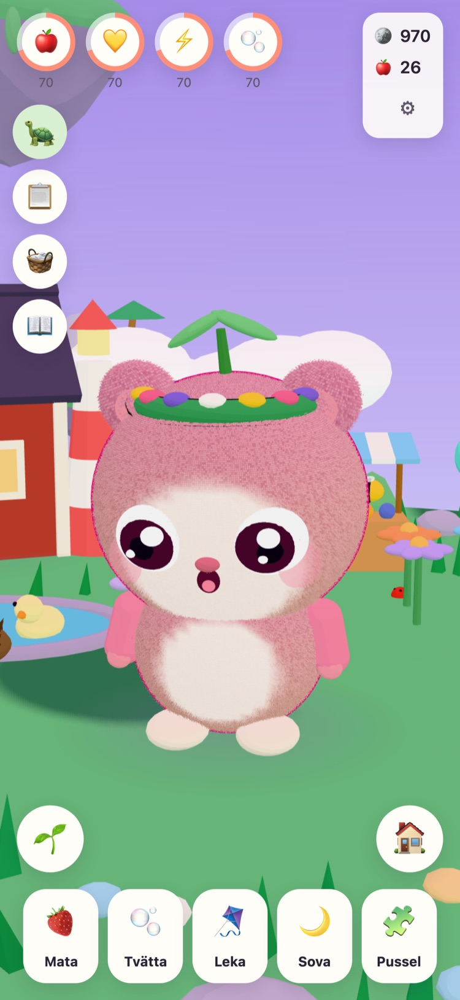
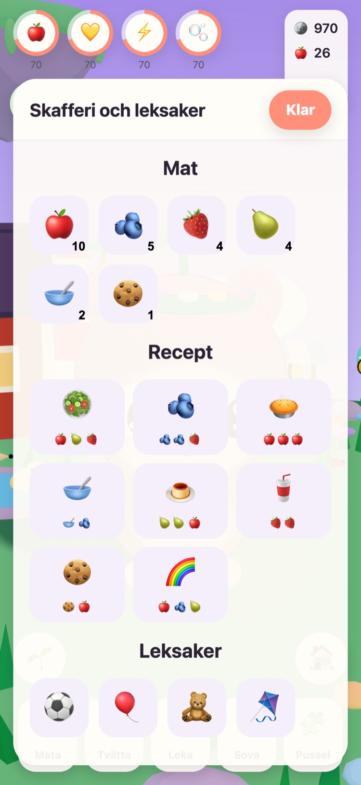
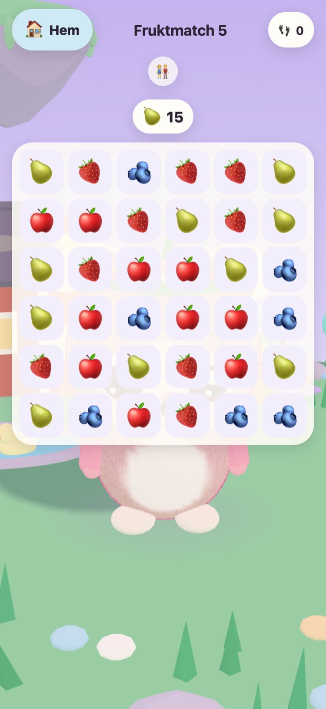
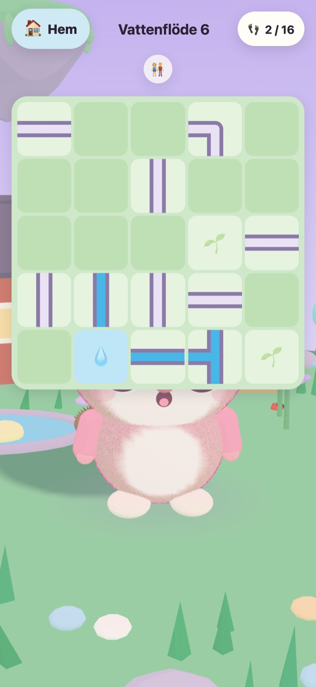
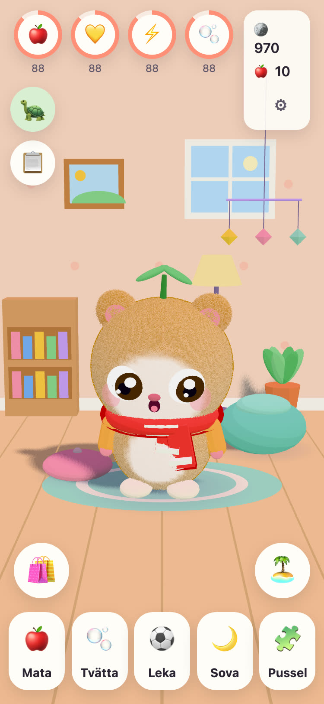
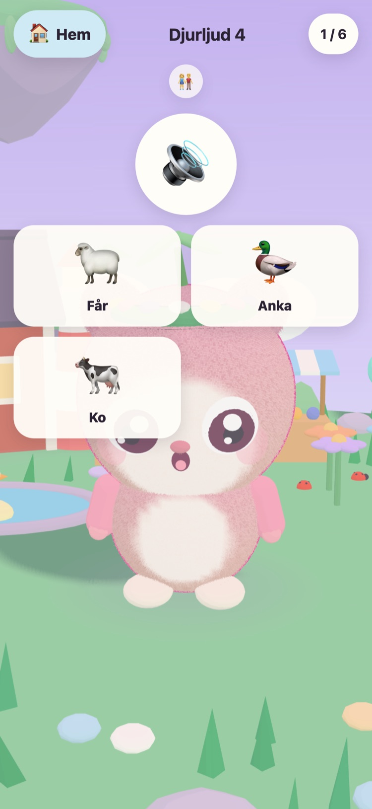

JUNOLittle Worlds
Kläck en Juno, ta hand om den och lös snälla pussel som väcker en svävande ö. Ett lugnt spel för barn mellan 6 och 10 år, på iPhone och iPad.
Hej! Jag har hittat tre varma ägg. Vilket är ditt?
- Ingen reklam
- Ingen spårning
- Inget konto
- Inga timers eller stress






En liten vän alldeles egen
Morfar Tintin, den gamla sköldpaddan som tar hand om Ängsön, har hittat tre varma ägg. Ditt barn väljer ett och ger det som kläcks ett namn. Sedan är Junon barnets egen att mata, tvätta, leka med och lägga för en tupplur.
-
Välj ett ägg
Tre varma ägg i tre färger. Barnet väljer ett och ser det kläckas.
-
Ge den ett namn och ta hand om den
Mata, tvätta, leka och sova. Junon visar hur den mår och växer när vänskapen växer.
-
Väck ön
Varje stjärna från ett pussel tänder ljuset på Ängsön igen, tills blommor, bin och ankor är hemma igen.
Mata, tvätta, leka, sova
Olika mat och leksaker, bubblor i badet och en Juno som visar hur den mår. Behoven sjunker långsamt och aldrig till noll, så en Juno går aldrig förlorad.
57 snälla pussel
Fruktmatch, Minnesträdgården samt Djurljud och Fordonsljud med riktiga inspelningar. Stjärnorna kommer från dragen, aldrig från tiden, och det är alltid gratis att försöka igen.
En ö som vaknar
Blomsterträdgården slår ut och bina kommer, Ankdammen fylls med vatten och ankor, och frön växer till äpplen och jordgubbar i trädgårdslanden.
Ett rum att göra mysigt
Mynt från pussel och dagens uppdrag köper saker till Junons rum och kläder att ha på sig. Inget i affären kostar riktiga pengar.
Allt läses upp
Morfar Tintin läser varje rad högt med sin egen varma röst, för barn som inte kan läsa än. Tryck på honom så säger han det igen.
För föräldrar
Bakom en föräldraspärr: språk, uppläsning, ljud, läggdags och en snäll påminnelse om paus. Vid läggdags sover Junon, och pusslen väntar till morgonen.
Talar 21 språk
Morfar Tintin pratar med barnet på barnets eget språk. Välj språk under Föräldrar, eller låt spelet följa enheten.
English Svenska Dansk Norsk Suomi Deutsch Nederlands Français Español Italiano Português (Brasil) Polski Русский Ελληνικά Türkçe Bahasa Melayu Kiswahili हिन्दी 日本語 한국어 简体中文
Gjort av en morfar
JUNO är gjort i Sverige av en morfar till hans barnbarn: ett spel han gärna ser henne spela. Morfar Tintin, sköldpaddan i spelet, är han själv.
Därför är reglerna enkla. Inget som stressar, inget som lurar och inget som samlar in något om ditt barn.
Gratis, utan reklam
JUNO är gratis att ladda ner och har ingen reklam, ingen spårning och inget konto. Allt ditt barn gör stannar på din enhet. Läs mer på sidan om integritet.
En vuxen kan köpa JUNO Plus eller Vinterpaketet under Föräldrar, bakom föräldraspärren. Båda är engångsköp som går att återställa och dela med familjen.